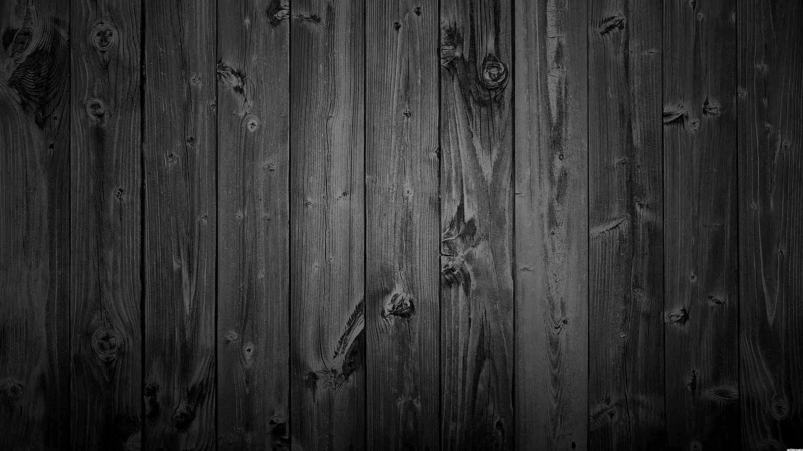

Chess
Current rating-
Standard - 1059
Rapid - 1085
Blitz - uncalibrated
Coaches-
Dibyendu Barua Chess Academy(2012)
C.R. Mukherjee(2016)
International Arbiter Debashish Barua(2016-2017)
Swapan Chakraborty(2017-present)
Achievements
Participated in the National Rapid Chess Championship as a part of West Bengal faction(2017)
Achieved an International Rating given by the World Chess Federation(2016)
Second place at inter-school chess tournament hosted by Heritage School, Kolkata(2014)
Second place at inter-school chess tournament hosted by Don Bosco School, Park Circus(2013)